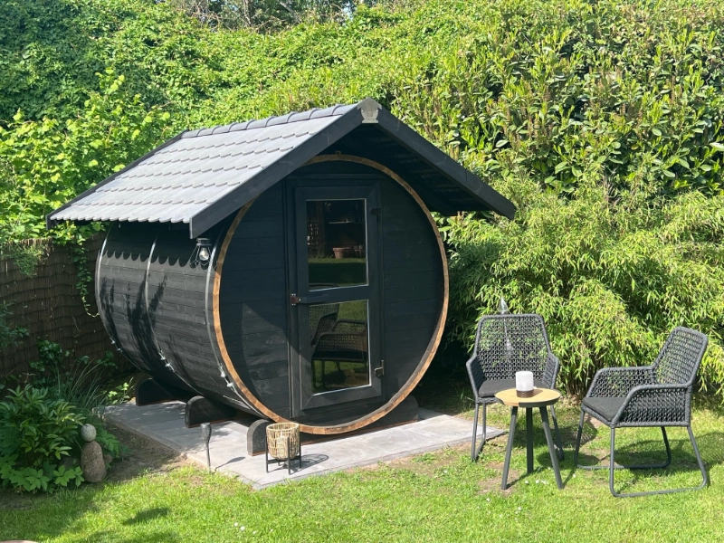
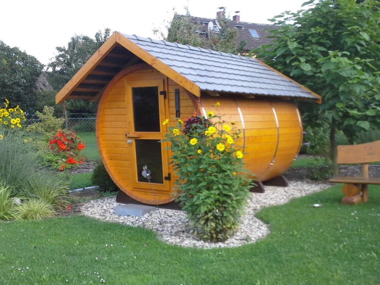
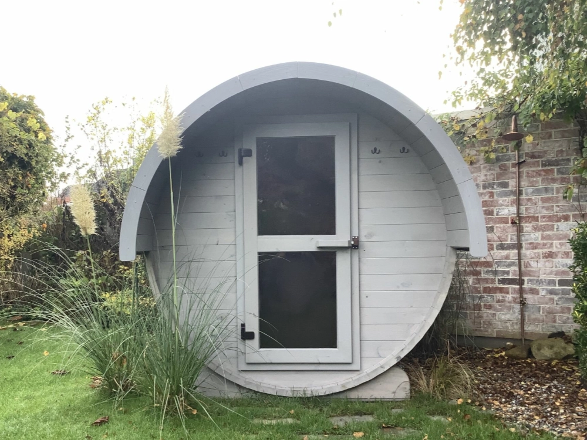
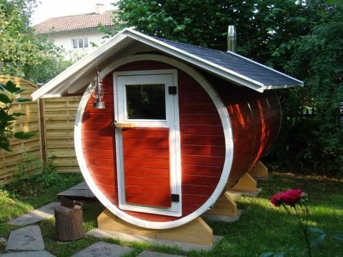

Holzschutz
Unsere Saunen werden aus maschinell getrocknetem Nadelholz gefertigt. Dieses Thermoholz ist besonders witterungsbeständig und formstabil. Während der thermischen Behandlung erhält das Holz eine dunkelbraune Färbung. Unbehandeltes Holz verliert durch Witterung, Sonneneinstrahlung, Regen und Feuchtigkeit seine natürliche Farbe und vergraut. Außerdem kann es zu Rissbildungen kommen. Durch das Auftragen eines Holzschutzes tragen Sie zur Erhaltung der Oberfläche und zum Witterungsschutz bei.
Das Holz sollte daher zeitnah nach der Montage mit einem geeigneten Holzschutz- beziehungsweise Pflegeanstrich für Thermoholz im Außenbereich behandelt und regelmäßig gepflegt werden. Dafür muss das Holz trocken sein.



